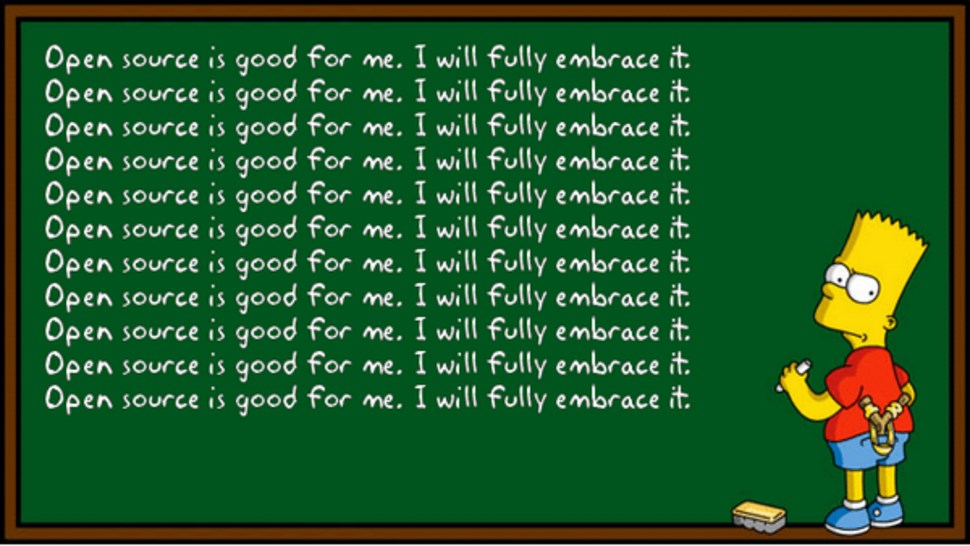

I’ve been a fan of open source software for a long time. However, up until recently, I wasn’t seriously contributing to any specific project; but why would you want to contribute to an open source project in the first place?
There are a few different aspects to be taken into account here, and here I try to go through some of them.
- Help the community by contributing to the project. This is the one which comes to one’s mind the most. You like a product, or a community around a particular software, hence you contribute to that particular software. Doing so, you help yourself (if you use the software) and everybody else who uses that same product.
- Help the larger community by advocating and normalizing open source contributions. When you contribute to open source projects, you become yet another person who does that and it demystifies open source contributions for people around you. Many people (if not most) think you need to be a proficient programmer for an open source contributions, not realizing many contributions are not even in the form of code. If you work in a place where you use those projects in your products, it would make you and your colleagues realize how much work goes into those projects, and how your company could benefit from spending time improving it as a part of your job.
- Personal recognition due to those contributions. Although your first contributions may be small, they’ll grow and become more substantial if you stay persistent in your contributions. Sooner or later you become a core member of the community you work with, and you’ll be recognized as such. Unlike your contributions to the closed source products in whatever company you work, the open source contributions are out there and you don’t ever need to prove that you’ve done them. It becomes a provable part of your professional portfolio.
- Free mentors while your contribution gets reviewed. This is only true for the friendly and nice project communities, and fortunately their number is growing. For quite a few years, if not decades, open source communities were mostly toxic, but that’s changing and people are becoming nicer and more patient with newcomers. This means you shouldn’t fear contributing, since the core developers of the project would help you go through the process and get your contribution up to the standards of the project. This also helps you gain experience working in a larger and more diverse team, and feel all the perks and challenges that come with it.
Unfortunately not many places encourage their employees and colleagues to have open source contributions, but still, I don’t know of a place which would dislike a candidate who has had some contributions which they can see and check. Maybe half the job offers I get are because of my presence in the open source world.
Personally, I don’t accept a job offer which involves no open source contributions, and I always check what contributions the company and their employees have. At least in Berlin, the scene is changing fast, and it’s becoming somewhat embarrassing for companies not to have any open source product, and many of them are working on improving on this front. This is partly due to the fact that many developers prefer an open and transparent company, and open source is just a part of it.
So at the end, the more people contribute to these projects, the more pressure it puts on companies to include themselves in this movement, which benefits the larger open source software community.
I’ll talk about what these contributions mean, and how one could start contributing in a separate post.